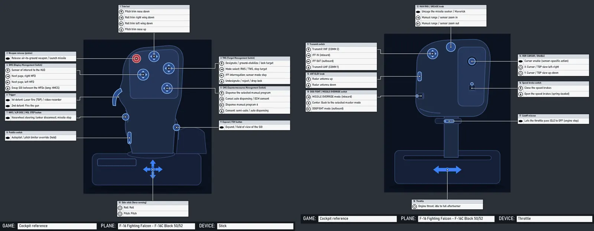

From docs/cockpits.md in the repository (generated, always the current text).
JoyPro's reference of real and fictional cockpits, shown like the cockpit chapter of a flight manual: pick an aircraft, its version (block, tranche, lot, mark, ship) and seat, and read
- the overview of the cockpit with its numbered areas (HUD, front dash, consoles, throttles, stick ...);
- a page per grip (stick and throttle, cyclic and collective, yoke and quadrant, side-stick, hand controllers): JoyPro's drawing with numbered callouts and the HOTAS table: a row per control, direction, press (short, long, hold ...) and condition (on the ground / in the air), a column per mode or sensor of interest (TAD, TGP, HUD ...; NAV, A-A, A-G; SCM, NAV, quantum), colour-coded per control;
- a page per panel with JoyPro's drawing, numbered callouts and the numbered list (switch positions, what each does);
- where every item comes from (manual and page) and links to real photos.
The Cockpits page in the bottom bar shows it; engine cockpits ... gives the same data to scripts and to the setup
wizard ("Use this layout").

#What is in it
EngineOnly_Runtime/DB/Cockpits/*.json: the aircraft (formatjoypro-cockpits), one file per family of types (jets-us.json,jets-europe.json,jets-russia.json,warbirds.json,helicopters.json,civil.json,space-games.json,fiction.json,spacecraft.json...).EngineOnly_Runtime/DB/Cockpits/drawings/*.json: JoyPro's own schematic vector drawings of the grips (formatjoypro-cockpit-drawing), and the generic drawings every aircraft without its own drawing gets.EngineOnly_Runtime/DB/Cockpits/line-drawings/*.json: JoyPro's own drawings of real cockpits (formatjoypro-device-drawing, device-reference.md):<variant>.overview.json,<variant>.panel.<panel id>.json,<variant>.<device>.json(a grip), and the older<aircraft>.<device>.json. Each carries the callout positions asparts(item number or control id -> [x, y], 0..1 of the drawing). Read one at a time when a page needs it.- Photos are addresses only (
photosof an aircraft), shown after the user's consent, never in the repository or the release (see Photos).
It is JoyPro's own work and ships with JoyPro (DB\Cockpits is one of the shipped DB folders, tools/ReleaseContent.psm1;
pictures inside it are refused).
#Format
{ "format": "joypro-cockpits", "version": 1,
"aircraft": [ {
"id": "f-16", "name": "F-16 Fighting Falcon", "aliases": ["Viper"],
"category": "fixed-wing", "fiction": false, "franchise": "",
"maker": "General Dynamics / Lockheed Martin", "nations": ["US"], "role": "multirole", "era": "modern",
"summary": "One or two sentences.",
"photos": [ { "url": "https://upload.wikimedia.org/...jpg", "page": "https://commons.wikimedia.org/wiki/File:...",
"view": "cockpit", "credit": "U.S. Air Force photo", "license": "public-domain",
"variant": "f-16c-block-50", "caption": "...", "confidence": "high" } ],
"links": [ { "title": "...", "url": "https://..." } ],
"variants": [ {
"id": "f-16c-block-50", "name": "F-16C Block 50/52", "aliases": ["Block 52"], "years": "1991-",
"inherits": "", "removeControls": [], "seat": "",
"games": [ { "game": "DCS", "plane": "F-16C_50" }, { "game": "FalconBMS" } ],
"drawings": { "stick": "f16-sidestick", "throttle": "f16-throttle" },
"controls": [ {
"id": "stick.hat.tms", "device": "stick", "name": "TMS (Target Management Switch)", "type": "hat4",
"where": "4-way hat at the top right of the grip head, forward thumb position", "part": "",
"functions": [ { "dir": "up", "text": "Designate / lock target", "fn": "target_management_system_up", "note": "" } ]
} ],
"panels": [ { "name": "ICP and DED", "area": "glareshield", "text": "..." } ],
"cockpit": "A paragraph about the cockpit around the pilot.",
"notes": "What differs from the other variants, what is uncertain.",
"sources": [ { "title": "DCS F-16C Early Access Guide", "url": "https://...", "kind": "game-manual", "covers": "HOTAS" } ],
"confidence": "high"
} ]
} ] }
#Version 2: the manual pages
Version 2 adds, per variant (all optional for the format; cockpits check asks every listed variant for an overview and
numbered panels):
{ "id": "a-10c-ii", "seatOf": "",
"sources": [ { "id": "m1", "title": "DCS A-10C II Flight Manual (EN)", "kind": "game-manual",
"file": "Mods/aircraft/A-10C_2/Doc/DCS A-10C II Flight Manual EN.pdf", "covers": "cockpit, HOTAS, panels" } ],
"modes": [ { "id": "tad", "name": "TAD", "kind": "soi" }, { "id": "tgp", "name": "TGP", "kind": "soi" }, { "id": "hud", "name": "HUD", "kind": "soi" } ],
"defaultMode": "hud",
"controls": [ { "id": "stick.hat.dms", "device": "stick", "name": "Data Management Switch (DMS)", "type": "hat4",
"where": "...", "n": 2, "src": "m1", "page": "108",
"functions": [
{ "dir": "fwd", "press": "short", "by": { "tad": "TAD scale decrease", "tgp": "Zoom increase", "hud": "Steerpoint increment" },
"fnBy": { "hud": "..." }, "src": "m1", "page": "109" },
{ "dir": "left", "press": "long", "text": "HMD on/off" } ] } ],
"overview": { "drawing": "a-10c-ii.overview", "text": "...",
"areas": [ { "n": 1, "name": "Heads Up Display (HUD)", "area": "glareshield", "x": 0.46, "y": 0.26,
"panels": ["hud-area"], "src": "m1", "page": "105" } ] },
"panels": [ { "id": "left-front-dash", "name": "Left Front Dash", "area": "front-left", "text": "...",
"drawing": "a-10c-ii.panel.left-front-dash", "src": "m1", "page": "113", "confidence": "high",
"items": [ { "n": 1, "name": "Left engine fire T-handle", "type": "handle", "positions": ["IN", "PULLED"],
"text": "...", "x": 0.76, "y": 0.05, "fn": "" } ] } ] }
| Field | |
|---|---|
modes |
the HOTAS table's columns: id, name, kind (soi sensor of interest, master master mode, mode flight or game mode, condition, seat). Without modes the table has one "Function" column |
defaultMode |
the column the one-column views, the search and the setup wizard read (default: the first mode) |
function press |
short, long, press, hold, double, release, or empty; a row is one direction, press and condition |
function when |
a condition the row needs: ground / air (weight on wheels), a master mode, "gear down" ... |
function by, fnBy |
the row's cell per mode (text, and the JoyPro function id where it maps); "" = no function in that mode. With modes, every row has text (the same in every mode) or a cell for every mode. Equal neighbouring cells are drawn as one |
control n |
its callout number on the grip's page (the manual figure's number); else numbered in list order |
overview |
the cockpit's numbered areas (1..N), where each callout points on the overview drawing (x, y 0..1), the panels in each area; drawing names JoyPro's drawing of the cockpit (none: JoyPro's plan) |
panel id, items |
panels have an id (the overview names them) and numbered items 1..N: name, type (switch2, switch3, knob, selector, button, lever, handle, wheel, guard, gauge, display, light, indicator, keypad, rocker, hat, slider, encoder, pedal, other), positions, text, x, y (where its callout points on the panel's drawing) |
seatOf |
a seat (CPG, WSO, RIO, operator) of another variant: the Cockpits page lists it under that version's seats |
src, page |
on controls, rows, areas, panels and items: the source id (sources[].id) and the page |
source file |
a document that comes with a game, relative to its folder, where it has no web address; kind may be game-files (the game's own control lists) |
An inheriting variant takes its parent's modes, overview and panels unless it gives its own.
#Aircraft
| Field | |
|---|---|
id |
lower case with dashes, unique (f-16, eurofighter-typhoon, x-wing) |
category |
fixed-wing, helicopter or space |
fiction |
true for craft of films, series and games (Star Wars, Battlestar Galactica, Star Citizen, Elite ...): no drawing of the design, see Licensing |
franchise |
the work a fictional craft is from |
nations |
ISO-like short names (US, UK, FR, DE, RU, SU (Soviet Union), CN, SE, IT, ES, JP ...) |
role |
fighter, attack, multirole, interceptor, bomber, trainer, aerobatic, transport, airliner, ga (general aviation), business, helicopter-attack, helicopter-utility, helicopter-transport, helicopter-light, starfighter, freighter, explorer, capital, spacecraft |
era |
ww1, interwar, ww2, korea, cold-war-early (to ~1965), cold-war-late (to ~1991), modern, future |
hidden |
a template other variants inherit from (a game's default control scheme); not listed |
#Variants
A variant is what has its own controls: a version (F-16A / F-16C), a block (Block 50), a tranche (Typhoon Tranche 1), a lot (F/A-18C Lot 20), a mark (Spitfire Mk IX), a seat (AH-64D pilot / CPG) or a ship.
inherits: the id of another variant (any aircraft). The variant starts from that one's data; its own fields replace the parent's, its controls replace the parent's control with the same id and add new ones,removeControlsdrops controls,drawingsare merged,sourcesare joined.games: where it is flown.gameis JoyPro's game id (DCS,FalconBMS,IL2Game,IL2Korea,MSFS2020,MSFS2024,XPlane11,XPlane12,WarThunder,StarCitizen,EliteDangerous,X4,VTOLVR,NuclearOption,ArmaReforger,Arma3,FSX,P3D5...),planethe game's own aircraft name where JoyPro's function tables know it (DB/Functions/<game>.tsv, columnplane:F-16C_50,FA-18C_hornet,AH-64D_BLK_II_PLT); empty for games whose tables are per game.drawings: device → drawing id. A device without one gets the generic drawing of its kind.confidence:high(the controls come from the aircraft's or the game's manual),medium(consistent secondary sources),low(partly inferred;notessays what).sources: at least one.kind:manual(flight manual, NATOPS, Dash-1 public excerpts),game-manual(DCS, BMS, IL-2, MSFS ...),wikipedia,reference(books, museums, official pages),tutorial(videos, community guides),film(the work itself).
#Controls
| Field | |
|---|---|
id |
the control vocabulary's part id where there is one (devices.md): stick.trigger, stick.weapon_release, stick.hat.trim|tms|dms|cms|N, stick.button.index_lower, stick.pinky.lever|button, stick.gimbal, throttle.hat.mic, throttle.speedbrake, throttle.boat, throttle.china, throttle.coolie, throttle.dogfight, throttle.cage, throttle.ministick, throttle.axis.main|left|right, collective.hat.N, yoke.hat.N ...; else <device>.<kind>.<name> (throttle.knob.man_rng, throttle.wheel.ant_elev) |
device |
stick, throttle, cyclic, collective, yoke, sidestick, quadrant, rhc, thc (spacecraft hand controllers), pedals, panel |
type |
hat4, hat8, hat2, rocker, button, trigger, lever, paddle, switch2, switch3, slider, wheel, knob, encoder, selector, ministick, axis, gimbal, twist, detent, guard |
where |
position and role in words: "4-way hat at the top right, under the thumb" |
part |
the drawing's part it is drawn on when that differs from id (generic drawings) |
functions |
one per direction: dir (up down left right press fwd aft center in out cw ccw stage1 stage2 x y pitch roll yaw axis long double hold pull push on off posN upleft upright downleft downright, or empty for the only action), text (short, at most ~45 characters, shown in the table), fn (the JoyPro function id from DB/Functions/slots.json, empty when JoyPro has none), note |
The stick side (stick, cyclic, yoke, side-stick, RHC) and the throttle side (throttle, collective, quadrant, THC) must each have at least one control: a fixed-wing aircraft has a stick and a throttle, a helicopter a cyclic and a collective, an airliner a yoke or side-stick and a quadrant.
#Panels
area: glareshield, front-left, front-center, front-right, left-console, right-console, center-pedestal,
overhead, left-side, right-side, floor, rear, helmet, seat. (The plan of area boxes the page drew from
them is no longer shown, see "What the pages show".)
#What the pages show (2026-10-25)
- A variant with good pictures from a game (a set not rated low) shows those pictures and no drawing at all: no plan, no traced drawing, no schematic grip (a grip the game has no picture of keeps its HOTAS table without a picture).
- Without such pictures: no plan of area boxes and no traced line drawing (
line-drawings/,CockpitManualPages.TracedDrawingsis off); a grip page shows JoyPro's clean vector drawing of the grip (drawings/) with its HOTAS table; the overview and the panel pages are their numbered lists, next to the cockpit guide's tree. - Pictures of the same aircraft from another game: the set is found by the catalog variant's games (
CockpitPictureSet.For, rendered sets first: DCS, X-Plane 12, MSFS 2020, then MSFS 2024's screenshots ...), so the IL-2 Korea MiG-15bis and F-86F show DCS's pictures and an MSFS 2024 aircraft that is also an MSFS 2020 or X-Plane aircraft shows those; the page says where they come from ("Pictures from X-Plane 12 ..."). Only the variant itself counts (no loose name match). 2026-10-25: IL-2 Korea 3 of 3 variants; MSFS 2024 29 of 55 from rendered sets, 35 with the MSFS 2024 screenshot packs as well; the 8 Rafale and Typhoon versions are War Thunder aircraft too (War Thunder's packs, not counted here); no pictures: A350, A380, 777-300ER, ATR 72, E175, E195, CRJ-700, CRJ-900, Pitts S-2S, R44, CH-47D, MH-60R. - X-Plane's commands are listed by readable names ("Gen 2 up", "Battery 1 on (electrical)"); the guide's tree shows the command ids as the tooltip.
#Drawings
{ "format": "joypro-cockpit-drawing", "version": 1, "id": "f16-sidestick", "kind": "stick",
"name": "F-16 side-stick grip", "view": "the grip from behind and left, as the pilot sees it",
"origin": "JoyPro's own vector drawing ... not traced from a photo.", "generic": false,
"width": 800, "height": 1000,
"shapes": [ { "kind": "path", "role": "body", "path": "M284,320 C282,250 ... Z" },
{ "kind": "rect", "role": "bodyAlt", "x": 110, "y": 770, "w": 620, "h": 180, "r": 28 },
{ "kind": "ellipse", "role": "shadow", "x": 420, "y": 968, "w": 330, "h": 20 } ],
"parts": [ { "id": "stick.hat.tms", "type": "hat4", "x": 546, "y": 282, "r": 32, "angle": 0 } ] }
shapes: the silhouette in drawing units (the same primitives as the device drawings,DeviceSchematic):path(absoluteM L Q C Zwithx,ypairs),rect(x, y, w, h, r),ellipse(centre x, y, radii w, h),line(x, y to w, h),text.rolepicks the theme colours:shadow,body,bodyAlt,face,screen,control,mark,hot,accent,line,label.parts: the controls, drawn by JoyPro in one consistent style (CockpitSchematic.Glyph):hat4,hat8,hat2,rocker,button,release(red),trigger,lever,paddle,switch2,switch3,slider,wheel,knob,encoder,selector,ministick,gimbal,axis,twist,detent,guard,label.ris the size,angleturns it (degrees). A control of a variant is drawn where the part with its id (or itspart) is; the callout table's line goes there.aircraft,variants,except,device(optional): where the drawing is used without the variants naming it. A device of a variant gets, in this order: the drawing the variant names (drawings), a drawing that lists the variant, one that lists the variant it inherits from, one that lists its aircraft (unless the variant is inexcept), else the generic drawing of its kind.devicedefaults to the drawing'skind. Fictional craft never get a non-generic drawing.generic: true: a neutral drawing of a kind of device (generic-stick,generic-throttle,generic-sidestick,generic-yoke,generic-quadrant,generic-cyclic,generic-collective,generic-space-stick,generic-space-throttle,generic-pedals,generic-panel). On a generic drawing a control whose part the drawing does not have takes the next free part of a fitting kind (a hat on a hat, a lever on a lever), so every aircraft is shown with its controls in their listed order.
How a schematic drawing (drawings/) is made: the shape of the real grip and the positions of its controls are
reconstructed from the public descriptions (the aircraft's manual excerpts, the game manuals' HOTAS chapters, several
photos looked at for proportions), then drawn freely as a clean silhouette in JoyPro's style with its own coordinates.
No photo is traced, no manual figure copied. engine cockpits render --drawing <id> --png <file> shows a drawing with
every part's id for checking.
#Line drawings of real grips
line-drawings/<aircraft>.<device>.json (aircraft, device: stick, throttle, cyclic, collective, yoke) holds
JoyPro's own line drawing of a real grip, in the same format as the device drawings. With a parts object (part id ->
[x, y], 0..1 of the drawing) placing at least half of a sheet's controls, the Cockpits page draws that sheet on the
line drawing; without it, the drawing is shown under "JoyPro's drawings" above the photo links (no download, no
consent). Fictional craft never get one. It is painted in the user's drawing style (Settings > Drawings).
The picture order of a sheet: JoyPro's line drawing with positions, else JoyPro's schematic drawing of the grip, else the generic drawing of its kind; the real photos are links shown after the user's consent.
#Callout sheets
The Cockpits page shows the manual pages (above); the callout sheets remain for engine cockpits render without
--page and for the setup wizard's pictures. Every device of a variant is one sheet: the drawing, a table per control (title "N Name", one row per direction with
the direction's icon and the function's text), thin orthogonal lines from the control to its table. It is the Layout
page's callout layout (CalloutLayouter, device-reference.md),
so the tables never overlap and the lines do not cross tables. Controls the drawing has no part for are listed under
"Other controls" without a line. Numbers run across the devices of a variant (stick 1-10, throttle 11-18).
#The Cockpits page
- Picker (left): search over names, aliases, variants, makers, franchises and game aircraft names; filters for the game, the era, the role, the nation and the kind (fixed-wing, helicopter, space, fiction); the variant (version / block / tranche) list of the picked aircraft. A version with several seats gets a Seat choice.
- The manual (
CockpitManualPages,ManualPageView): tabs for the Cockpit overview and each grip (Stick, Throttle, Cyclic, Collective ...), a Panels list with one page per panel, previous / next. The overview's areas lead to their panel (or grip) page with a click. A table cell shows the JoyPro function it maps to as a tooltip. - Search this cockpit: words over every control, row, cell, area and item of the variant; the hits are listed (page and text) and highlighted on the pages.
- Export page (PNG) / All pages (PDF): the pages in the user's drawing style (Settings > Drawings) to
Documents\JoyPro2\Cockpits.engine cockpits render <aircraft> <variant> --page all|overview|stick|throttle|panels|panel:<id> --png <file> | --pdf <file>makes the same pages from the command line. - Below the pages: the notes, the photo links and the sources.
- Photos: the aircraft's photo links. JoyPro asks before it loads any ("JoyPro has photos of the
cockpit on . Download them and show them here?" Yes / No / Always for cockpits / Never); see privacy.md. - Compare with my setup: with a profile open, each function gets a mark in the HOTAS tables when a relation of the
profile holds it for that game and aircraft (
engine cockpits compare), with the relation's name and its input. - Use this layout: opens the setup wizard with the variant (below): its aircraft first in the priority list, and the plan reads this variant's layout for it.
#The cockpit guide
Every panel and every control of a cockpit explained in plain words, as a tree: area (a rough section only: left console, main panel, overhead, stick and throttle) > panel (a real, named panel: "ENG & JET START control panel", "Autopilot panel") > control (every switch, button, knob, lever, with its positions). Each panel and control has "What does it do?" (what it does, as for someone who has never sat in a cockpit) and "In the bigger picture" (when and why the pilot uses it, what depends on it, where it comes in the start-up), the positions (OFF / BATT / MAIN PWR, each with what it does), the game's own name for it, the commands to bind it with, the open profile's relations that bind it (after Compare with my setup) and the source (manual and page).
On the Cockpits page the guide sits next to the manual page (above it on a narrow window). A click on a control opens the page that shows it and marks its callout (a ring around the point, the list line highlighted); a click on a callout or a list line of a page selects its control in the tree and opens its explanation. The search box ("battery", "autopilot") filters the tree to the matching controls with their panels and areas and marks them on the pages. The printed pages keep the compact form: the game panels are titled by the guide's panels ("ELEC control panel, EPU control panel" instead of a camera view's "Instrument Panel (3)"), the callouts carry the guide's names, and each list line gives the first sentence of the explanation.
#The data (DB/Cockpits/guide)
Written offline (no AI at runtime) from the games' own control lists (the source sheets of the picture sets: DCS hint texts and command categories, X-Plane tooltips and commands, MSFS node and event names, IL-2 actions), the manuals that come with the games and JoyPro's catalog; shipped with JoyPro.
{ "format": "joypro-cockpit-guide", "version": 1, "id": "dcs-f-16c-50", "title": "F-16C Viper (DCS)",
"variants": ["f-16c-block-50"], "games": ["DCS"], "sets": ["DCS/F-16C_50"],
"sources": [ { "id": "m1", "title": "DCS F-16C Early Access Guide (EN)", "file": "Mods/aircraft/F-16C/Doc/..." } ],
"intro": "What kind of aircraft, how its cockpit is laid out.",
"areas": [ { "id": "left-console", "where": "left-console", "name": "Left console", "text": "...", "seat": 0,
"panels": [ { "id": "elec", "name": "ELEC control panel", "db": "elec-control-panel", "text": "...", "context": "...", "src": "m1", "page": "64",
"controls": [ { "id": "main-pwr", "name": "MAIN PWR switch", "type": "switch3",
"match": ["PTR-ELEC-TMB-MPWR-510", "item:elec-control-panel:1"],
"positions": [ { "name": "OFF", "text": "..." }, { "name": "BATT", "text": "..." }, { "name": "MAIN PWR", "text": "..." } ],
"text": "...", "context": "...", "count": 0, "fn": "" } ] } ] } ] }
| Field | |
|---|---|
variants |
the catalog variants it explains (a guide may list a version's seats; the back seat's areas have "seat": 2, areas without a seat are in every seat) |
inherits, remove |
starts from another guide (A-10C from A-10C II, Ka-50 BS2 from BS3, TF-51D from P-51D); its areas, panels and controls are replaced by id; remove drops panel or panel/control ids |
partOf |
a part file of a big guide (dcs-a-10c-ii-part2.json): its areas join the guide's |
common + games |
a shared guide of a game's common controls (IL-2's actions, MSFS's node names, X-Plane's commands): used for every variant of the game below its own guide; only its controls the cockpit has are shown |
area where |
glareshield front-left front-center front-right left-console right-console center-pedestal overhead left-side right-side floor rear seat helmet hotas other |
panel db |
the catalog panel it is (the catalog's items no guide control names are listed in it) |
control type |
switch2 switch3 switch knob selector button lever handle wheel guard cover gauge display screen light indicator keypad rocker hat slider encoder pedal trigger axis other; count for a group of alike controls (OSB 1-20) |
match |
the game controls it is: a glob of the picture callout id (PNT-BTN-MFD-L-*), cmd:<glob> (a command id or name of the callout: X-Plane commands, IL-2 actions, MSFS events), label:<text> (the callout's label), item:<catalog panel>:<n>, control:<catalog grip control id>. The first guide control (in file order) that matches a callout gets it |
Translations: <id>.<lang>.json (joypro-cockpit-guide-text: title, intro, areas / panels by id,
controls by panel/control with name, text, context and positions by the English position name). The GUI
uses the language of the user interface where there is one (German: .de.json), else English. Controls no guide
explains (War Thunder, Nuclear Option, Star Citizen, aircraft without a guide yet) are listed under their game panel or
catalog panel with the game's or catalog's name, the catalog's note and a general description of their kind of control
(GUI texts, translated); the tree says "not explained yet".
General explanations by function (guide/_templates.json, German _templates.de.json, format
joypro-cockpit-guide-templates): for every control no guide explains (War Thunder, Nuclear Option, Star Citizen, Elite,
X4, VTOL VR and the long tail of the others) the template with the longest of its words in the control's name (else
in the catalog's note) gives the text and the bigger picture, with {name} replaced by the control's own name ("landing
gear", "flaps", "master arm", "radio", "trim" ...); gauges, lights and screens get the template of what they are. The
tree shows them as "general description"; a control without a matching template gets the GUI's sentence for its kind of
control (switch, knob, button ...).
Animated controls: every control of the picture set's controls list (see Animated controls)
is in the tree. One that is a callout joins its callout's node; one that is not (an animated part without a callout)
gets a node of its own at the pictures it is visible on, matched to a guide control by its id, label or commands like a
callout, else under its game panel with a general explanation. Its kind (switch-3, rotary ...) gives the type and
its animation's positions the positions ("Position 1 / 2 / 3") where no guide names them. New picture sets are read
whenever the page shows a variant, so rebuilt sets show their animated controls without a JoyPro update.
Rules (CockpitGuideLibrary.Check, part of engine cockpits check; tools/cockpit_guide.py check): ids, a name and
both texts on every area, panel and control (lengths within bounds, no placeholder, no exclamation mark), no two
controls with the same text or context in one seat, positions named once, each with its text, switch2 with two and
switch3 with three positions, known types and variants, translations that name existing areas, panels, controls and
positions.
Writing more: tools/cockpit_guide.py (check, coverage <guide> --pictures <set> lists the game controls a guide does
not explain yet, stats, report --pictures <root> the coverage of every picture set). The writers' brief (format,
style guide, glossary of plain explanations) is kept with the maintainer's working files; its rules are the ones above:
facts only from the game's labels, the manual and the catalog; a game control is tied to a guide control only when its
label, commands or id say which it is; when unsure, say less.
#Coverage (2026-10-25, engine cockpits guide --coverage [--game G] --no-pictures)
Every catalog variant has its guide (462 / 462): the catalog's panel items and grip controls, 40,638 of 40,754 written out
(81 with a general description). The game control schemes (Star Citizen, Elite Dangerous, X4, No Man's Sky, Star Wars:
Squadrons, Nuclear Option, VTOL VR, WARDOGS) have a base guide for the game's hidden template variant plus a small guide
per ship (its own intro and its own panel items, inherits the base); real versions of a type that has a guide in another
game inherit it (War Thunder's F-16V from the DCS F-16C, the Mi-17 from the DCS Mi-8MTV2 ...) and add what differs.
| Game | Variants with a guide | Catalog controls written out / in the tree |
|---|---|---|
| DCS | 81 / 81 | 17,464 / 17,568 |
| Falcon BMS | 17 / 17 | 3,374 / 3,396 |
| IL-2 Great Battles | 66 / 66 | 3,635 / 3,645 |
| MSFS 2020 / 2024 | 51 / 51, 54 / 54 | 3,247 / 3,259; 3,532 / 3,532 |
| X-Plane 12 | 18 / 18 | 1,046 / 1,046 |
| War Thunder | 155 / 155 | 19,801 / 19,832 |
| Star Citizen / Elite Dangerous / X4 | 42 / 42, 32 / 32, 21 / 21 | 2,821, 1,891, 696 (all) |
| Nuclear Option / VTOL VR | 13 / 13, 9 / 9 | 351, 636 (all) |
| All | 462 / 462 | 40,638 / 40,754 |
The guide data: 1,591 areas, 3,487 panels, 19,694 guide controls, about 5.4 million characters of English.
#Coverage with the picture packs (2026-10-18, engine cockpits guide --coverage [--game G] with every picture pack installed)
| Game | Variants with a guide | Controls written out / with a general description / in the tree | Game controls explained |
|---|---|---|---|
| DCS (48 cockpits, every module incl. Flaming Cliffs, SA342, A-4E) | 81 / 81 | 17,464 / 69 / 17,568 | 17,206 / 17,206 |
| Falcon BMS (F-16 blocks, Hornets, A-10A) | 17 / 17 | 3,393 / 91 / 3,502 | (no pictures) |
| IL-2 Great Battles (117 cockpits) | 66 / 66 | 4,906 / 4 / 4,916 | 2,148 / 2,148 |
| MSFS 2020 / 2024 | 49 / 51, 52 / 54 | 3,772 / 581 / 5,017; 4,128 / 571 / 5,382 | 9,043 / 9,906; 9,913 / 10,797 |
| X-Plane 12 | 18 / 18 | 1,543 / 1 / 1,553 | 3,886 / 3,896 |
| War Thunder | 100 / 155 (shared variants) | 14,050 / 3,483 / 18,428 | 8,714 / 8,801 |
| Nuclear Option / Star Citizen | 0 | general descriptions: 351 / 351, 2,296 / 2,821 | – |
| All | 209 / 462 | 28,347 written, 10,113 general / 41,457 | 28,412 / 29,329 |
The guide data: 966 areas, 2,657 panels, 16,329 guide controls (groups of alike controls count once), about 4.6 million characters of English; German for the ten biggest DCS modules (F-16C, F/A-18C, A-10C II, AH-64D, F-15E, F-14, Ka-50 III and BS2, UH-1H, Mi-8MTV2, F-4E) and both MSFS shared guides (every MSFS aircraft's game controls).
engine cockpits guide <aircraft> [<variant>] [--lang de] [--search words] [--no-pictures] prints the tree (JSON, or
text with --text); --coverage [--game G] the table above per variant; engine cockpits compare also lists every game command the profile binds (Commands), which the
guide shows per control.
Code: engine/DeviceReference/CockpitGuide.cs (format, library, rules, matching), CockpitGuideTree.cs (the tree of a
variant), CockpitManualPages (the guide's names on the pages), gui/JoyPro.Gui/ViewModels/CockpitsViewModel.Guide.cs,
Views/CockpitsView.axaml. Tests: CockpitGuideTests (the shipped guides' rules, the tree on a synthetic cockpit with
pictures, seats, a shared guide and German, the pages, the page's selection and marks; opt-in render:
JOYPRO_GUIDE_RENDER_OUT, JOYPRO_GUIDE_PICTURES, JOYPRO_GUIDE_AIRCRAFT=f-16:f-16c-block-50:jfs;...).
#For the setup wizard and scripts (API)
engine cockpits get <aircraft> [<variant>] [--json]returns the resolved variant asjoypro-cockpit-layout:Aircraft,Variant,Games,Devices[](Device,Title,Drawing,Generic,Controls[]withId,Name,Type,Where,Part,Placed,X,Y(0..1 on the drawing) andFunctions[]withDir,Text,Fn,FnName,Vocabulary(the control vocabulary id of that direction, e.g.stick.hat.tms.up,stick.axis.pitch) andActions[](Game,Plane,Action: the game's own command id fromDB/Functions/<game>.tsv)),Panels,Sources,Photos,Links. The aircraft and the variant may be given by id, name or alias; a variant id alone also works (engine cockpits get f-16c-block-50).- In the GUI:
CockpitsViewModel.UseLayoutRequested(event,CockpitLayoutRequestwithAircraftId,VariantId,Gamesand the CLI arguments) goes toMainWindowViewModel.UseCockpitLayout, which opens the setup wizard with it (SetupWizardViewModel.UseCockpitLayout; a wizard made later takesPendingCockpitLayoutwithTakePendingCockpitLayout()). The wizard puts the aircraft named inGamesfirst in the priority list and asks the engine with the request's arguments (cockpits get <aircraft> <variant> --json) for that aircraft's--cockpit-file. cockpits get --jsonalso givesModes,DefaultMode, theOverview(areas), thePanelswith theirItems, and per functionPress,When,ByandFnBy. A function'sTextandFnare the default mode's cell: the setup wizard places a function where the default mode has it (SetupCockpits).engine cockpits list [query] [--game G] [--era E] [--role R] [--nation N] [--category fixed-wing|helicopter|space|fiction|real],search <text>(aircraft and controls / functions: "TMS", "china hat"),compare <aircraft> [<variant>] [--game G](with--profile),render <aircraft> [<variant>] --png <file> [--device d] [--style dark|light] [--print-width px](the callout sheets),render ... --page <page> --png <file> | --pdf <file> [--scale s] [--highlight words](the manual pages),photos [query] [--coverage],coverage(also the manual pages per game),drawings,check [--structure](--structure: only what is wrong, not what is still missing).
#Pictures from your games
Build pictures from my games on the Cockpits page (or engine cockpits pictures build) draws the cockpits of the
games installed on this PC from the games' own files (the files listed per game below, read only). They are kept with
the game data (<data>\GameData\CockpitPictures\<game>\<aircraft>) and are never part of the repository; the sets made
for JoyPro's releases are offered as picture packs (see "Picture packs"). For MSFS 2024 the pictures are screenshots
taken in the sim (see below). Wherever a variant's game has pictures, the manual pages show them in place of JoyPro's
drawings:
- Cockpit overview: the whole cockpit from behind the pilot's head. Its numbered callouts lead to the panels and the grips.
- Stick / Throttle: the game's grip on its own. The HOTAS table is unchanged. A control has a callout where the model
names a part for it (A-10C:
STICK-BTN-TMS,TRTL-R-HAT-SLEW); controls the model has no part for are listed under the picture. - One page per panel (the game's own panels): a frontal picture with every clickable control numbered, and a
numbered list with the game's own name for the control (DCS: the hint text of
clickabledata.lua; X-Plane: the manipulator's tooltip). For DCS the list also gives the bindable commands of the same device and command number (JoyPro's DCS command list of the aircraft); for X-Plane it gives the command or dataref. - Picture from the game / JoyPro's drawing of it: either the render itself, or JoyPro's line drawing of it (outlines, details and the printed labels traced from the render, plus flat cel colours). The drawing is shown in the user's drawing style (Settings > Drawings), like the device drawings.
Where the callouts come from: they are computed from the model, never placed by hand. In DCS the clickable connector
of each element (PNT_.../PTR-... in the cockpit EDM, named in clickabledata.lua) gives the place; the panel comes from the
command list's category ("Left Console; ENG & JET START Control Panel"), else the connector's panel token. In X-Plane
the manipulator geometry of the cockpit objects gives the place. The grips are found by the animation arguments
mainpanel_init.lua gives them (DCS), by the VR hand connectors (STICK_HANDLE, THROTTLE_HANDLE) or by node names, and by the
yoke and throttle datarefs (X-Plane); the details are under "Finding the grips".
| Game | What is read | State (2026-10-17) |
|---|---|---|
| DCS World | Mods\aircraft\*: entry.lua (aircraft, cockpit folder), Entry\Views.lua where a module keeps it there, mainpanel_init.lua (model, grip arguments), clickabledata.lua, Views.lua (seats, eye points), the cockpit EDM and its textures (DDS in zip archives, also under CoreMods\aircraft\<module>) |
49 cockpit sets on the test PC (2026-10-25). The SA342 Gazelle's cockpit model is in CoreMods\aircraft\SA342\Shapes (found there since 2026-10-25); the F-14BU has no clickable data yet (overview only); the textures of the C-130J, F-14 and OH-58D are in CoreMods\aircraft\<module>. Opaque self-lit surfaces (additive_self_illum_material without blending) are drawn like plain ones since 2026-10-31: the C-130J's panel faces (overhead, pedestal, consoles: PACK2..PACK5, VC_PAN_01..12) are made of them and showed as grey plates without labels, and its throttle levers too (a throttle page since then; the set's mean rating 80 -> 91, no picture left out); the light layers (additive or alpha blending, bano) stay out. The AJS37, F-16C, Ka-50 and P-47D pictures stay the same apart from small parts (the Ka-50's reserve attitude indicator scale). The F-100D's model has parts the reader places wrongly (big shards): its set is rated low and most of its panel pictures are left out |
| X-Plane 12 | Aircraft\**\*.acf (objects, pilot's eye) and the OBJ8 objects with their textures (DDS and PNG both top row first; the figures (pilot, crew and passenger objects, also in crew\/pilot\ folders) left out, the pilot's panels kept) |
23 aircraft (every one in Aircraft; an AI-only _AI copy is left out). The displays are drawn by the sim at run time (black in the pictures) |
| MSFS 2020 | the packages of InstalledPackagesPath (UserCfg.opt) without .fsarchive files: model*\model.cfg interior= -> the interior xml (its first LOD's glTF, its behaviours) -> the glTF (Asobo's optimised format: interleaved vertices, half-float texture coordinates, primitives sharing one index buffer by ASOBO_primitive StartIndex / BaseVertexIndex, MSFT_texture_dds), the textures (texture.cfg fallbacks), cameras.cfg + flight_model.cfg (eye = reference datum + eyepoint + the pilot camera's offset) |
57 interiors (every readable one of the test PC's packages; about 730 pictures, 7,300 callouts). Callouts on the parts named by function (ELECTRICAL_Switch_Battery_Master, older models DEICESYSTEM_SWITCH_AIRFRAME), with the behaviour template and its events where the xml names the node; the yoke (HANDLING_Yoke_1, YOKE_LEFT) and throttle are grips; where a model uses other names (2026-10-26) any part named as the stick, yoke, throttle or collective (COCKPIT_yoke_pilot, Yoke1, joystick_l, ENGINE_Lever_Throttle_1_Visual, throttle_01, collective_grip_pilot) or driven by a throttle, collective or yoke behaviour (also in the files the interior includes: the PC-6's Prop_Lever, ASOBO_ROTORCRAFT_Collective_Template of the Cabri) is one: the pilot's (nearest the eye, not copilot), the whole lever or yoke, without its rods, cables, base and the other pilot's grip. Every interior has both grips except the gliders (LS8, DG-1001: airbrake levers only), the Wright Flyer (no throttle) and the Bell 407 (its cyclic is a skinned mesh, which the reader does not pose). Packages with .fsarchive files are not read; the sim itself is not installed on the test PC |
| MSFS 2024 | the models are not read (the aircraft packages hold .fsc / .fsarchive files). Screenshots in the sim instead: tools\e2e\games\Msfs2024CockpitShots.ps1 (unattended; SimConnect through the sim's own client library SimConnect_internal.dll: EnumerateSimObjectsAndLiveries, FlightSave/FlightLoad to swap the aircraft at Innsbruck, CAMERA VIEW TYPE AND INDEX for the pilot's view and every instrument view, EnumerateInputEvents) |
screenshots of every aircraft family (overview + instrument views, the HUD cropped away); the list on the overview is the aircraft's own input events (ELECTRICAL_Battery_1), without places (they cannot be derived honestly from a screenshot). Only via picture packs or the e2e script, not from the Cockpits page |
| Nuclear Option | NuclearOption_Data\resources.assets (plain Unity 2022.3 data, JoyPro's own read-only reader): the aircraft prefabs' cockpit objects (interior, stick, throttle or collective, screens), the pilot's helmet camera as the eye, the textures from resources.assets.resS, the unit names of the aircraft definitions and the game's Rewired action list |
13 aircraft (every flyable one; 46 pictures, about a minute). The cockpits have no separate switches (painted on), so the callouts name the grips and the screens only; each grip page lists the game's "Flight Controls" actions (they bind to any button) |
| IL-2 Great Battles | data\*.gtp (plain stored archives, read only): the plane scripts (luascripts/worldobjects/planes/*.txt: name, cockpit model, pilot seat as the eye), the cockpit -c.mgm models (JoyPro's own reader: node tree, geometry, skinned parts, the animations that tie the argument numbers to the parts), -c.arg argument names, DDS textures, the input actions and their English names (swf/il2) |
117 aircraft with a pilot's cockpit (about 1,070 pictures, 2,200 callouts; the 66 catalog variants find their set). Callouts: the parts the control arguments move, named by the game's input action where the argument is plainly that control (gear, flaps, throttle, mixture ...), else by the argument's own name. Not complete: CG-4A and Pe-2 ser.87 overviews are wrong (frames the reader does not follow), linkage rods the game places at run time are left out. Grips: the parts the pitch/roll arguments (406/407) and the throttle arguments (1100, 1200 ...) move; where that part is the frame the grip sits on (the WWI sticks on their torque tube, the Ju 52's column with the bar to both wheels, the Gotha's column; more than 1.2 m), the parts under it, the one with the buttons or nearest the eye (2026-10-26). The D.H.2 and the Nieuport 28 (Gnome Monosoupape: no throttle) get the fuel lever (mixture argument) as the throttle-hand lever; the CG-4A glider has none |
| IL-2 Korea | not read: JoyPro reads none of its archives with cockpit models (the archives it can read, S16R!, hold no cockpit model; searched for the cockpit node and texture names). Readable on disk: data\input\general.actions (JSON) and the mission files |
skipped; in-game screenshots (Quick Mission) would be the way, only while the PC is idle |
| Star Citizen | the game's data files, read only and never while the game runs: ship entities, seats, dashboards and grips, their interaction points (named with the game's own texts) and the flight actions of the default profile; the cabin from the ships' object containers (.socpak): their entities and their brushes (.soc chunk 0x0010 version 1: the model and material tables, then 208-byte records with the brush's box in the ship and its placement in the container as 3x4 doubles; drawn within 3.2 m like the hull); a variant's own hull model (aegs_sabre_raven.cga) before the base ship's |
149 cockpits (2026-10-26): cabin walls, floors and consoles of 135 ships (until then 129 ships noted their brushes as not drawn), real layer textures and metals (no ship notes an unreadable texture any more, 32 before; one set rated low, 44 before). Not drawn: a variant's separate canopy model (aegs_sabre_raven_cockpit.cga: its placement is not in the files JoyPro reads), the .cdf parts (glass, thrusters). 14 small ships have their cabin in the hull model only (Razor, Dragonfly, Vanduul, Xi'an). Some ships take a co-pilot's or an operator's seat as the pilot's (Constellation Aquila and Phoenix, Caterpillar): their overview shows that seat's view. Grips (2026-10-26): every grip-named node of the seat, the dashboard and (right in front of the pilot) the hull and cabin is tried, the topmost first; a stick support or yoke arm is a carrier, not a grip; handlebar and "controller" sticks and thrust controls count; a ship with two sticks (HOSAS) has its left stick as the throttle hand. 16 ships have no stick or throttle in a readable model (Origin 100i/315p/600i, Reliant Mako/Sen, Starfarer, the alien ships of Gatac, Banu, Xi'an, Aopoa; their controls are named generically or placed outside the files JoyPro reads) |
| War Thunder | content.hq\pkg_cockpits\res, read only: the GRP2 packs (*.grp: the 1,197 <plane>_cockpit DynModels with their _skeleton node trees; DagorEngine's format: vertex declarations, packed positions with the model's unpack constants, meshoptimizer-packed indices, LOD 0's rigid meshes), dynModelDesc.bin (zstd, binary BLK: each model's materials and texture names) and the DxP2 texture packs (DDSx; the best of $hq / base / $tq). The vertex data and most textures are Oodle Leviathan packed: unpacked by the War Thunder Oodle helper tools\wt-oodle (a separate GPL-3 program, a C# port of parts of ooz with fixes; the engine starts it as a process, JOYPRO_WT_OODLE names it; without it War Thunder is skipped with a note). The eye is the pilot figure's head bone (Bip01 Head01); the grips are the model's stick* / throttle* nodes and the yokes (shturval, column); the callouts are the model's own control and instrument node names (gears, flaps, airbrake_lever, mixture, speed, altitude_hour ...; instruments carry the node name). Not read: aces.vromfs.bin (flight models, cockpit instruments, HUD, the factory HOTAS presets), char/game/gui/lang/mis/webUi/wwdata vromfs and every grp_hdr.vromfs.bin |
1,197 cockpits on the test PC (9,274 pictures, about 25,000 callouts; about 4 hours at low priority). Environment cubemaps and some shared textures are not in the cockpit packs (flat colour); 42 cockpits have a texture in a format JoyPro does not decode (flat colour). 52 models have no pilot figure (mostly bomber cockpits made of their instruments): the eye is placed above and behind the stick (7) or behind the middle of the instruments (45). Users get the pictures as picture packs (the helper is not part of the release) |
The Lua files are read with DCS's own interpreter (bin\luae.exe) and small harness scripts that only print; nothing in
a game folder is written. A build skips an aircraft whose pictures are newer than its model and were made for the same
game version (--force makes them again). It takes about two seconds per picture; a big DCS module has 50 to 80 pictures.
engine cockpits pictures build [--game DCS|XPlane12|MSFS2020|IL2Game|NuclearOption|WarThunder|StarCitizen|all] [--aircraft <name>,...] [--force] [--out <folder>],
engine cockpits pictures status, engine cockpits pictures check (below), engine cockpits render ... --pictures picture|drawing|none. The format:
pictures.json (joypro-cockpit-pictures): per view id, kind (overview, device, panel), title, area, seat,
image, drawing (a joypro-device-drawing), width, height, and callouts (n, id, label, x, y 0..1 of
the picture, kind, device, commands); index.json names the set of each of the game's aircraft names. The code is
in engine/CockpitPictures (EDM, OBJ8, DDS/TGA/PNG readers, a software renderer, the line tracer, the view planner).
#Picture quality
Every picture goes through an automatic quality gate (engine/CockpitPictures/PictureQuality.cs, used by
PictureWriter for every game). Measured on the picture: how much of the frame the model covers (for a grip: the box
around what is drawn), the share of 8x8 blocks with visible detail (local contrast), the brightness entropy, the share of
black; from the renderer: the share of textured pixels and of the view's callouts that are in the frame and not covered.
A score of 0 to 100 (60 and more: good) and the problems (little detail, one flat colour, mostly black,
mostly empty, too small in the frame, untextured, controls hidden, camera inside the model, flat shapes: more
than 45 % of the picture's 8x8 blocks are one flat tone, big bare polygons such as the shards of a part the reader
places wrongly; not judged on grips and screenshots). A grip on its own is not judged by untextured and needs only a
little grain (10 % of its blocks, a panel 35 %): smooth plastic seen big is what a clean grip looks like (until 2026-10-26
the untextured Star Citizen and MSFS throttles rated 0 to 40 and were left out).
How the planner frames the pictures (CockpitViews):
-
A panel is seen face on: the direction comes from the model's own surfaces around its controls (area-weighted triangle normals, the controls' small parts left out), the plane through the controls only where the surfaces disagree. A row of knobs gives no plane: fitted to the knobs, the 737's overhead rows were seen along the panel's face, floating knobs without the panel. The picture is the right way round as the pilot reads the panel: a console seen from above has forward at the top, an overhead panel seen from below has aft at the top (with forward at the top, the 737's overhead labels were upside down until 2026-10-25); the pilot's right is on the right (
PanelPictures_AreTheRightWayRound). -
A compact group (at most 30 cm, a keypad or a CDU with 60 keys) stays one picture whatever its count, and the parts of one panel that fit 30 cm together join again: split by the count, each half got the same minimum frame and the same picture several times. A clear gap (more than 8 cm) is where a big group is split first. Two named panels side by side keep their own pictures.
-
Games that name no panels group their controls by the aircraft system their names say (
ControlSystems): X-Plane's command paths (sim/autopilot/...,laminar/B738/fuel/...), MSFS's node and event names (ELECTRICAL_Switch_Battery). A picture is then "Autopilot", "Electrical", "CDU (flight management)", "Fuel" ... (split by place), and a system with fewer than three controls stays with its place ("Overhead panel"). -
The overview is aimed at the panel and the consoles (the levers far below the eye pulled it onto the seat cushion), turned to the middle of what it shows and fitted to the controls within about twice their typical distance.
-
A dark render gets its middle tones lifted (a gamma curve that brings the median to about 100) besides the exposure of its highlights.
-
Star Citizen: a white diffuse without its texture is drawn neutral grey and untextured colours stay below a light grey (lit from the camera they were pure white); panel pictures of interaction points need a good score (60; 70 until the cabin textures of 2026-10-26). The layered (HardSurface) materials get their first layer's diffuse texture, tinted with the layer's tint and repeated with its UV tiling (painted panels, bare metal, carbon fibre: until 2026-10-26 one averaged flat colour, the Gladius looked untextured grey); a metal (black diffuse, bright specular, in a layer or a plain material) is drawn by its specular colour, dimmed, and keeps a tint's hue but not its darkness (drawn by the diffuse it was pure black: the Sabre's floor and the Gladius' steel parts); a plain material whose texture is a white mask gets its own diffuse. The wear layer, the blend layers, the normal maps and the vertex colours (dirt and wear masks, not colours) are not drawn. Archive entries with the second local header mark (
PK 3 20) are read as well (until 2026-10-26 the RSI ships' metals were flat colours). The overview leaves out only the seat's parts that reach up to the eye or lie behind it (back, head rest): the arm rests and the cushion stay. Without grips and dashboard it looks ahead from the seat. -
A grip much smaller than its frame is zoomed to what is drawn; a poor picture is made again with the planner's other cameras (a panel: more room around it, then the pilot's own view from the head; the overview: closer to the head, at the head, further back) and the best one is kept.
-
A panel or grip picture that stays below 45 is left out (its overview callout goes too); the overview is always kept.
-
A panel picture that looks like an earlier one (the same panel framed for another group of its controls) gives its callouts to that one (
merged). -
pictures.jsongetsquality(scoreof the overview,mean,low,views,dropped,merged) and, per view,quality,problemsanddrawingReadable: falsewhere JoyPro's line drawing would be a mess (a poor picture, a busy perspective, a screenshot): the drawing mode shows the picture there. -
A set is
lowwhen its overview is below 45 or fewer than a third of its pictures are good. The Cockpits page then shows another game's set of the aircraft first (CockpitPictureSet.For; the picture packs:"low"in the manifest). -
engine cockpits pictures check [--game G] [--aircraft a,b] [--write] [--drop]rates sets that are already there (screenshots, picture packs, older builds);--writekeeps the ratings inpictures.json,--dropalso leaves out the panel pictures below the gate. What only the renderer measured (camera inside, untextured, hidden controls) keeps the lower of the old and the new score. -
The build report names a set's verdict ("low quality (overview 31/100); 4 unusable pictures left out; 2 duplicate pictures merged").
JOYPRO_PICTURE_KEEP_ALL=1keeps every picture (to look at what the gate leaves out).
#Grip parts
The named parts of a game's grips are checked against the aircraft's manual figures (engine/CockpitPictures/GripParts.cs):
- Fixes per model where the model's part names are wrong or say nothing: the DCS A-10C / A-10C II stick names its
countermeasures switch
STICK-BTN-TMSand its TMSSTICK-BTN-TARG(Flight Manual, Figure 69): JoyPro calls them CMS and TMS; the MMCB, the NWS button, and the throttle's left throttle button, slew, coolie, mic, speed brake, boat switch and china hat get the manual's names (Figure 70). - Left out: panel controls under a grip's node (
TUMB-PANTRTL-..., the F-5E'sLVR-PANUHF-VOL) and the modelling tool's names (Helix004,NGon058,Details036,RUS08). - A part that does not sit on the grip's surface in the picture (a part known only by its node's pivot) is listed without a place ("Not shown on the drawing") instead of being drawn beside the grip.
- The grip picture is taken from the side that shows most of its parts: besides the view from behind and the thumb's side, the front with the thumb's side (the trigger and the buttons on the front face, the A-10C's NWS button below the trigger), the profile and the other side are tried.
- The page places a catalog control on a game part only when the part shares a word of what the control is (its id, the first words of its name; general words such as "weapon" count less): the 172's "A/P DISC / TRIM INT switch" is no longer put on the elevator trim buttons.
CockpitPictureQualityTests.OptIn_GripAudit(JOYPRO_CHECK_PICTURE_SETS=<pictures root>) writes every grip control of every catalog variant with the game part it is placed on to%TEMP%\joypro-grip-audit.tsvfor a review.
#Finding the grips (2026-10-26)
A helicopter's collective is the throttle grip in every game (as the UH-1H's always was). Never per aircraft; in order:
- DCS: the grip arguments of
mainpanel_init.lua(the harness reads options it does not know as "not set": it stopped atLockOn_Options.cockpit.mirrors, so the P-51D, TF-51D and others had no stick gauges, and the MiG-19P tookdifficulty.hideStickas set), the VR hand connectors, the node names. For a kind still without a grip: the arguments of the handle nodes without meshes (STICK_HANDLE1,THROTTLE_L_HANDLE1, the La-7'spilot_hand_throttle) move the meshes of the grip within 25 cm of them (F-15E, OH-58D, C-101EB); then the names in the usual forms (ENG_Lever_Throttle,PNT_254_Throttle,ruchka_rud02,RUD_DER,Baston_Palo,P_YOKE,manetta,ar_StickShaft_Roll; buttons, locks, ghosts, links and bases are not grips); then the clickable connectors on a grip (PNT_THROT_L, the Gazelle'sPILOT-STICK-PA-PTR,COLLECTIVE-PTR). A part of a grip (the P-51D's twist grip) climbs to the node its name says is the lever; a grip with its linkage (the F4U's elevator rod, the Mosquito's throttle rod) loses the long rods. A grip the resting pose hides is shown with its visibility argument (the JF-17's show / hide stick switch); materials named for the pilot's grip (HB_F-4E_INT_PilotStick) are drawn, the pilot's body is not. - X-Plane 12: the yoke / throttle datarefs, also the aircraft's own throttle datarefs (
laminar/md82/engine/throttle_left,laminar/CitX/throttle/ratio_L,throttle_jet_rev_ratio) and a helicopter's collective (prop_ratiowhere the acf says_is_helicopter); never the rotor head's collective. The pilot's own cluster is kept before the size check (both yokes or sidesticks moved by one dataref were dropped as too big), a triangle run with both yokes or with the front and rear throttles and their rod is split into its parts. - War Thunder:
stick*,cyclic*, the yokesshturvalandcolumn,throttle*/collective*(alsothrottle1_1);stick_rhand/throttle_lhandonly where nothing else; a stick with its rods and cables (Re.2000, J20, Fokker D.VII, Arado 234) is trimmed to the parts nearest the pilot; a thin throttle lever that looks like a rod (C.202, Do 335) is kept where the model has no other throttle.
Not found, because the model has no separate part for it (checked 2026-10-26): DCS I-16 (only generic names, no grip gauges, no hand connectors) and the OH-58D pilot's cyclic (only bones, no meshes; the CPO's cyclic is found); X-Plane ASK 21 (a glider: no throttle, its air brake lever is a panel callout); War Thunder: of the 206 sets that lacked a grip, 156 have no stick / yoke node and 185 no throttle / collective node at all (bombers, transports and helicopters whose yoke, throttle quadrant or collective is part of the static cockpit mesh: B-17, B-29, A-20, Blenheim, He 111, SB-2, the helicopters' collectives); the Firefly's and G4M1's throttles are long rods only, the Ki-96's grips are hand bones without meshes. Found but left out by the quality gate as untextured or plain (to come back with the gate's grip rules): DCS F-14BU, War Thunder AH-60, E13A, He 177, Me 264, MH-60L, Mi-8AMTSh, SB-2 sticks.
#Which set a variant gets
The game's aircraft names first (DB/Cockpits games[].plane), then the variant's id, aliases and name; a fuzzy match
of names only when the variant names no aircraft of that game: a type number (two or more digits) and a word (the maker,
the type's name) or a type designation (c172) must be shared, the avionics' numbers (G1000) do not count as the
aircraft's, and the aircraft family's own names (C172) come last. No picture rather than a wrong one: the A350 no longer
gets the King Air 350, the CRJ and the E195 no 172 G1000, the PA-28 no 172 seaplane (Locate_NoNumberAloneMatchesAcrossFamilies).
A name several sets of a game share (X-Plane's 172, 172 G1000 and seaplane are all "Cessna 172 SP") leads to the set
without a special-version word (floats, skis, seaplane, AI).
#Animated controls
pictures.json lists every control of the cockpit once under "controls" (a data addition; the pages do not show it
yet): the callouts of the panel and grip pictures, the grips themselves (grip:stick, grip:throttle) and the model's
other animated controls a reader adds without a callout (CockpitScene.Controls). Per control: id, label, kind
(JoyPro's vocabulary: button, switch-2, switch-3, switch-N, switch (positions not known), rotary, lever,
axis, grip, hat, trigger, screen, cover, wheel, pedal, other), gameKind (the game's own: DCS TUMB,
X-Plane axis_knob, MSFS Switch ASOBO_..._Template), panel, device, seat, animation (source, name, min,
max, positions where known), commands (the ids to bind) and views (view, x, y 0..1 on every picture it is
visible on; n on the picture where it is a callout; elsewhere only where its surface is drawn at its place, not behind
something). Where the animation comes from:
| Game | animation.source |
Range and positions |
|---|---|---|
| DCS World | draw argument (clickabledata.lua arg) |
arg_lim (range), arg_value steps (a switch's positions) |
| X-Plane 12 | dataref / command (the manipulator) |
the manipulator's numbers (axis knobs, drag axes, toggles, pushes) |
| MSFS 2020 | behaviour (node and template) / model node |
not in the open files |
| IL-2 Great Battles | animation argument |
the argument values of its animation keys (positions when 2 to 6) |
| War Thunder | animated node (the skeleton's node) |
not in the open files |
| Nuclear Option | animated part (the grips) |
not in the open files |
| Star Citizen | interaction point / model node |
not in the open files |
CockpitPictureSet.Controls (CockpitPictureControl, CockpitPictureSpot) reads them.
What made the first X-Plane pictures unusable (2026-10-18): Laminar's DDS textures were sampled upside down (they are
stored top row first like their PNGs), so every surface showed the wrong part of its texture; and static offsets without a
dataref (ANIM_trans x y z x y z, ANIM_rotate x y z r r) were ignored, so the 737's levers and their callouts sat at the
aircraft's origin and its panel pictures looked at the inside of the nose (mirrored). Panel pictures of a single control
show at least 24 x 18 cm around it.
#Photos
Real photos are only linked: photos[].url (the picture) and page (where it is published, with its author and
license). Preferred: Wikimedia Commons (most US military photos are public domain; others CC licences) and official
pages (museums, manufacturers, air forces). For fictional craft the links point to the work's official or fan
encyclopedia pages.
- The GUI downloads a photo only after the user's yes for that aircraft (
CockpitPhotoConsent, built onDevicePhotoConsent: the answers are kept with the device photo answers under the keycockpit:<aircraft id>; "Always for cockpits" / "Never for cockpits" undercockpit:*; the global "Never" of the device photos also stops cockpit photos). It is cached in%LOCALAPPDATA%\JoyPro2\DeviceImages(DeviceImageCache) and shown with its credit and license. A Wikimedia Commons file is loaded as Wikimedia's 960 px thumbnail (what Wikimedia asks programs to use), the original only when the thumbnail fails. - Downloads go one at a time per site, a little apart, with a user agent that names JoyPro, its version and its repository (Wikimedia's robot policy). A "429 too many requests" or "503" answer is tried again after the server's Retry-After (else 2, 4, 8 seconds; at most four tries); an answer that is not an image (an error page) is not a photo; a photo that failed is not remembered as missing. Until 2.1.0 the photos loaded at once with a bare "JoyPro2" agent and Wikimedia refused most after the first two (the 747: 2 of 5).
- Each photo card has Open the photo (the file itself in the browser, full size, to save from there) and Open the page; a photo that could not be loaded gets Try again. A link that is only a page (fiction, official pages) says so instead of failing.
CockpitPictureQualityTests.OptIn_EveryCockpitPhotoLinkOpens(JOYPRO_CHECK_COCKPIT_PHOTOS=1, network) loads every photo link of the database as the page does (2026-10-18: 348 of 348).py -3 tools/cockpit_db.py check-links [--only id,id]asks every photo, page and link address once (HEAD, a one-byte ranged GET where a server refuses HEAD, a pause per site, retries after 429/503); offline it says so and passes. Sites that refuse programs (403, the fan wikis' bot protection) are listed apart: they open in a browser. 2026-10-25: 927 of 958 answer, 31 refuse programs (fandom.com pages), none fail.- Star Citizen ships: besides the official RSI ship page, each ship links its Star Citizen Wiki page (starcitizen.tools, community wiki under CC BY-SA 4.0: pictures of the ship and its cockpit, specifications); page links only.
- The render from the game where the photo would be (2026-11-01): a craft only a game has (
fiction: no real cockpit exists to photograph) or a variant without any photo address gets, as the first card under "Photos", the cockpit JoyPro rendered on this PC from the game's files ("Carrack: the cockpit rendered on this PC from the files of Star Citizen", "Made by JoyPro from your game files; it stays on this PC ..."). It is the set's overview, else its first grip picture, and only a picture the quality gate keeps (45 or more, like the manual's pages;CockpitManualPages.RenderInsteadOfPhoto); the manual's overview page is the same render. It is local: no question, no download, no "Open the page"; it follows the game chosen under "Pictures from" and appears right after "Build pictures from my games". Games JoyPro reads cockpit models of: DCS, X-Plane 12, MSFS 2020, IL-2, Nuclear Option, Star Citizen, War Thunder (MSFS 2024: screenshots). Elite Dangerous, X4, Star Wars: Squadrons, No Man's Sky, VTOL VR and the film and series craft have no render (JoyPro reads no cockpit models of them), so they keep their page links. - The engine never downloads a photo.
- The maintainer's private archive: see Photos of cockpits no game has.
#Photos of cockpits no game has
Where a game gives good pictures of a cockpit (see "Pictures from your games"), nothing else is needed. For the aircraft and ships no game has good pictures of (none at all, or a set rated low), JoyPro knows verified photos: photo addresses with a SHA-256 each, and JoyPro's own labels for the main panels as data.
- On the Cockpits page: such a variant gets "No game has pictures of this cockpit. Photos of the ... cockpit JoyPro knows: 2 (commons.wikimedia.org) ..." with Download photos. One click downloads every photo of the aircraft (it counts as the yes for that aircraft), with a progress bar and Cancel, and says how many were downloaded and checked, how many came from the web archive's copy and which could not be downloaded. The manual then has a page per photo ("Photo: Flight deck", after the overview): the photo as large as the page allows, JoyPro's numbered labels on top (a box near the panel, a line to a dot on it), the numbered list below (the label's note or the catalog panel's first sentence; a label that names a panel or grip leads to its page) and the photo's credit, licence and site. The photo cards under "Photos" show the downloaded photos from this PC, without asking again. A variant with good pictures from a game shows no photo page and no offer.
- On this PC:
<data>\CockpitPhotos\<aircraft>\<view>-<sha12>.<ext>withindex.json, kept by the same store as the device reference photos (ReferencePhotoStore, device-reference.md): the original address first, checked againstsha256(or one ofsha256Alt); when it fails or sends other bytes, the Wayback snapshot (archive, else the archive's newest capture), checked the same way; a photo the site changed and no archive has is kept as it is now and reported ("its labels may not fit"). - Shipped: only the addresses and JoyPro's labels. A Wikimedia Commons photo is recorded as its original file (the same bytes everywhere and in the web archive; drawn at most 2800 px wide); only a file over 7.5 MB or 6000 px is recorded as its 1920 px thumbnail. Wikimedia makes thumbnails in each of its data centres, and their bytes differ from place to place (a check from Europe and the web archive's capture from America got different files of the same size): such a download counts as changed, but the labels still fit, so the page only warns when the size differs. Other photos (makers, press, museums) are only addresses. The labels are never drawn into a picture.
The photo fields (in the aircraft's photos, besides url, page, view, credit, license, variant, caption):
| Field | |
|---|---|
sha256 |
the SHA-256 of the file at url (lower-case hex): makes the photo a verified one |
sha256Alt |
further hashes of the same pixels (a site re-encoded the file) |
archive |
its Wayback Machine snapshot (https://web.archive.org/web/<time>id_/<url>) |
width, height |
its size in pixels when recorded |
source |
commons, maker, press or museum |
A photo with variant belongs to that variant (and its seats and the variants inheriting from it); one without is for
every variant of the aircraft that needs photos.
JoyPro's labels (DB/Cockpits/photo-labels/<aircraft>.<sha12>.json, one file per photo):
{ "format": "joypro-cockpit-photo-labels", "version": 1, "aircraft": "a350",
"photo": { "url": "https://upload.wikimedia.org/wikipedia/commons/e/e0/Airbus_A-350_XWB_F-WWYB_cockpit_view.jpg", "sha256": "f83162..." }, "title": "Flight deck",
"source": "JoyPro's labels, placed on the photo by looking at it (2026-10-31)",
"labels": [ { "n": 1, "text": "Glareshield: autopilot (FCU) and EFIS", "x": 0.70, "y": 0.215, "panel": "glareshield" },
{ "n": 5, "text": "Nose wheel steering tiller", "x": 0.27, "y": 0.475,
"note": "A small hand wheel that steers the nose wheel while taxiing on the ground." } ] }
x, y: the point the label marks (0..1 of the photo from the top left); panel: a catalog panel id of the variant,
or a grip (stick, throttle, a device name), or overview; note: one plain sentence for a label without a catalog
panel text. cockpits check (CockpitPhotos.Check): a verified photo has its address, a SHA-256, its size, credit and
licence; a fictional craft has no Commons photo; labels are numbered 1..N once, 1 to 60 characters, inside the photo,
name a panel or grip the aircraft has, and belong to a verified photo of their aircraft.
#Tools
py -3 tools/cockpit_photos.py needed(orengine cockpits photos --needed [--game G]): every variant without good pictures from a game, why, and its verified photos.search <words>: Wikimedia Commons files;record <aircraft> <Commons file page or address> [--variant v] [--caption text] [--thumb]: downloads the photo once (the original, or the thumbnail as above; no EXIF rotation: JoyPro draws the pixels as stored), recordsurl,sha256, size, credit and licence (from the Commons file page) and keeps the bytes in the private archive.panels <aircraft> [variant],label <aircraft> <sha12> list | title <text> | add <n> <x> <y> <text> [--panel id] [--note text] | move <n> <x> <y> | remove <n>: the labels;preview <aircraft> [variant] <sha12>renders the photo page (engine cockpits render <aircraft> <variant> --page photo:<sha12> --photos <archive folder>).check: every verified photo alive / changed / dead, and for the others whether the snapshot has the recorded content;snapshots [--record] [--save-page-now] [--all]: finds a Wayback snapshot with the recorded content (CDX, matched by the digest of the private archive's copy without downloading the captures, then the captures compared, then the availability API), records it asarchive, and asks Save Page Now for the ones the archive does not have yet (one request every 20 s; after "too many requests" it waits 5, then 10 minutes);--allalso checks every recorded snapshot against the recorded bytes and replaces one that has other bytes.engine cockpits render ... --page photos|photo|photo:<sha12> [--photos <folder>|none]: the photo pages (default folder: the GUI's downloads);engine cockpits photos --verified: the verified photos with their hashes and labels.
#The private photo archive (maintainer)
tools\backup_cockpit_photos.ps1 [-Target <folder outside the repository>] [-Verified] [-Aircraft id] [-Refresh]
(default target JOYPRO_COCKPIT_PHOTO_ARCHIVE, else ..\JoyPro2-private\cockpit-photos) keeps a copy of every linked
photo, so that a photo whose address and snapshot are both gone can still be recovered and its labels checked: files by
content (sha256\<sha256>.<ext>, where cockpit_photos.py record puts its downloads too) and manifest.json (one line
per aircraft and address: aircraft, view, variant, url, page, credit, license, source, archive, origin (original /
archive), changed, date, sha256, bytes, recordedSha256, file). A verified photo is checked against its hash and comes
from its snapshot when the address fails. Incremental; neither the build nor the release reads it, and no archived file
is ever published. Older backups (<aircraft>\<view>-<sha12>.<ext>) move into the content store on the next run.
#First batch (2026-10-31)
cockpits photos --needed: 178 variants without good pictures from a game: 122 fictional (film and series craft, Elite
Dangerous, X4, No Man's Sky, Star Wars: Squadrons, VTOL VR, WARDOGS, Tiny Combat Arena: games JoyPro reads no pictures
of, or no real cockpit), 56 real, plus the Star Citizen ships whose renders are rated low. 40 of them now have verified
photos with labels (37 photos, 260 labels):
- Airliners and civil: A350-900, A380-800, 777-300ER, 727-200 (and its flight engineer's station), ATR 72-600, Q400, E175, E195, CRJ-700 / -900, Pitts S-2S, R44.
- Helicopters: UH-1Y, OH-58A, CH-47D, UH-60M, NH90, SA 330 Puma.
- Jets: Hawk T2 (Mk 127), MiG-31, Su-35S (exhibition stand), F-35A/B/C (mock-up), F-22A.
- Spacecraft: Mercury, Gemini, Apollo CM and LM (simulator), Space Shuttle (forward and aft flight deck), Soyuz MS, X-15, Crew Dragon (cabin mock-up), Buran.
- Star Citizen (renders rated low; the maker's own pictures, address only): Vulture, Ares, Aurora.
#Second batch (2026-11-01)
- MH-60R / MH-60S (
uh-60, variantmh-60r-s): 3 photos from Wikimedia Commons (U.S. Navy, public domain) with 15 labels: the MH-60S cockpit in flight (displays, standby instruments, keysets, centre and overhead consoles), the MH-60R cockpit in flight over the Gulf of Alaska, and the MH-60R centre console with the stabilator and dipping-sonar controls between the two keysets. Their web archive snapshots were made with Save Page Now (2026-11-01, see below). - Rafale (C, B, M, F4): Commons has no photo of a Rafale's cockpit panels (only people climbing in, the canopy from outside, a HUD selfie and the Rafale A prototype), so none was added.
- Star Citizen (Gladius, Carrack, Mercury Star Runner, C2 Hercules, Nomad, Defender): Commons has no picture of their cockpits, so none was added; the Star Citizen Wiki stays a page link. Their render from the game stands where the photo would be (below).
snapshots --all --record --save-page-now2026-11-01: every one of the 40 verified photos has a pinned Wayback snapshot with its recorded bytes. 37 had one, each checked by the CDX digest of the private archive's copy (all 37 kept); the 3 MH-60 photos had no capture, Save Page Now made one of each, and each was downloaded and compared with the recorded SHA-256 before it was recorded.CockpitPhotoTests.ShippedPhotos_AreVerifiedWithLabelsOnThePhotonow requires the snapshot of every verified photo.check2026-11-01: 40 of 40 verified photos alive with their recorded bytes;cockpit_db.py check-links: 950 of 980 addresses answer, 30 refuse programs (fandom.com pages), none fail.
Still without a usable photo (Commons has no cockpit photo of a real one, and no maker or museum picture was found): SA342 Mistral, Rafale, Hawk T1 / Mk 100, Alpha Jet, J-10, MiG-25, Su-57, Yak-130, F-16 Block 30 / F-16D, Soyuz TM, Pe-2 series 87 (IL-2 set rated low).
The Star Citizen Carrack, Nomad, Defender, C2 Hercules, Mercury Star Runner and Gladius have no real cockpit (no photo
exists), but JoyPro renders each of them on the user's PC from Star Citizen's files, and the render stands where the
photo would be (see Photos). Checked 2026-11-01 with the current reader (engine cockpits pictures build --game StarCitizen, rated by the quality gate): Gladius 100 (7 pictures: overview, stick, throttle, 4 panels), Carrack
95 (overview, both sticks), Defender 100 (overview only: its dashboard model cannot be read and no stick or throttle is
found by part name), Nomad 60 (overview, stick, throttle, overhead), Mercury Star Runner 100 (overview, yoke, 2 side
panels), C2 Hercules 93 (the A2/C2/M2 Starlifter share one set: overview, yoke, 3 panels). Sets made before 2026-10-26
(cabin and consoles not drawn yet) rated the Carrack, Nomad and Defender 0 and the Hercules 27, so their overview was
left out; "Build pictures from my games" with the current version makes them again where the game was updated since,
engine cockpits pictures build --game StarCitizen --force in any case.
#Licensing
- Real aircraft: the schematic drawings (
drawings/) are JoyPro's own reconstructions of the grip's shape and its control layout (functional facts: which switch is where and what it does), drawn in JoyPro's style. They are not traced from photos and do not copy a manual's figure. The line drawings (line-drawings/) are JoyPro's own drawings of the cockpits, panels and grips. No manual page, figure or photo is in the repository or the release. - Fictional craft (films, series, games): no drawing of their design. They get the generic stick and throttle with their function list only, plus links (licensing-audit.md, P7).
- Names of aircraft, franchises and makers are used to say what is described (nominative use); no logos.
- Text is JoyPro's own wording. Facts come from the listed sources; no source text is copied beyond short control labels.
#Growing the database
tools/cockpit_db.py (Python 3, no packages):
| Command | |
|---|---|
functions [query] |
JoyPro's function ids (DB/Functions/slots.json) |
seed <plane> [--game G] |
the HOTAS rows JoyPro's function tables already have for a game aircraft (DCS: physical control text per function) |
ids [query] |
aircraft and variant ids already in the database |
check [draft.json ...] |
the database plus the drafts through engine cockpits check (only the drafts' problems are printed) |
check --patch <patch.json> ... [--all] [--structure] |
the database with patches applied (a temporary copy), the patched variants' problems |
patch <patch.json> ... |
applies patches ({"format": "joypro-cockpit-patch", "variants": {"<id>": {fields}}, "aircraft": {...}, "newVariants": {"<aircraft>": [...]}, "newAircraft": {"<file.json>": [...]}}; a field given replaces the variant's field, null removes it) |
pages <aircraft> [variant] [--page ...] [--out dir] [--dark] [--patch p.json] |
the manual pages as PNG for a look |
merge <draft.json> --into <file.json> [--replace] |
adds the drafts' aircraft (or new variants of an aircraft already in the file) |
render <aircraft> [variant] [--out <folder>] [--light], render --drawing <id> |
the sheets as a PNG for a look |
get <aircraft> [variant] |
a variant with its controls, ids, types and where each is drawn |
photos-merge <photos.json> ... |
adds verified photo links ({"format": "joypro-cockpit-photos", "photos": {"<aircraft>": [ ... ]}}); an address already listed is skipped |
coverage, drawings |
numbers (also every control no drawing shows); drawings with their parts |
The procedure per batch (also the brief for research helpers):
- Take a list of types; check
idsso nothing is added twice. One aircraft entry per type family (all F-16 versions inf-16), one variant per version that has its own controls. - For each variant find the HOTAS description: the game manual's HOTAS chapter (DCS, BMS, IL-2, MSFS), the public
flight-manual excerpts, the manufacturer's or air force's pages, then tutorials. For a DCS module run
seedfirst: it lists the function ids JoyPro already maps to that module's stick and throttle, with the physical control in words. - Write the controls: vocabulary ids, device, type, where, and one function per direction with a short text and the
function id (
functions <word>finds it; empty when there is none, never a guess). - Panels briefly, the cockpit paragraph, notes (differences to the other variants; what is uncertain), sources with working https addresses, confidence.
check <draft>until it reports no problem, thenmerge.rendera few for a look.- Drawings are made separately (see Drawings); a new drawing's part ids are the controls' ids of the
variants that use it.
checkreports a part a variant names that the drawing lacks.
#Coverage (2026-10-13, engine cockpits coverage)
Every listed variant (462, plus 9 hidden game templates) has its manual pages: an overview with numbered areas, the
grips with their HOTAS tables and numbered panels; cockpits check reports no problem.
| Game | Variants | HOTAS rows | Variants with mode columns / columns | Panels | Numbered items | JoyPro's drawings |
|---|---|---|---|---|---|---|
| DCS (every module on the test PC, all versions and seats) | 81 | 2654 | 30 / 104 | 1223 | 9981 | 505 |
| Falcon BMS (F-16 blocks, Hornets, A-10) | 17 | 993 | 16 / 50 | 413 | 2413 | 211 |
| IL-2 Great Battles / IL-2 Korea | 66 / 2 | 974 / 44 | – | 364 / 32 | 2968 / 287 | 149 / 26 |
| War Thunder (type level) | 155 | 4309 | 43 / 125 | 1532 | 12507 | 539 |
| MSFS 2020 / 2024 | 51 / 54 | 1214 / 1323 | 5 / 15, 9 / 23 | 288 / 295 | 2561 / 2837 | 2 / 2 |
| X-Plane 11 / 12, FSX, Prepar3D | 14 / 18, 12, 14 | 335 / 437, 266, 340 | – | 71 / 93, 59, 70 | 579 / 808, 492, 592 | – |
| Star Citizen / Elite Dangerous / X4 | 42 / 32 / 21 | 2184 / 2112 / 588 | 42 / 294, 32 / 160, 21 / 84 | 276 / 224 / 105 | 1351 / 1027 / 318 | none (fiction) |
| VTOL VR / Nuclear Option / WARDOGS / Tiny Combat Arena | 9 / 13 / 6 / 1 | 147 / 253 / 90 / 15 | 7 / 19, – | 104 / 37 / 13 / 4 | 560 / 137 / 50 / 10 | none (game designs) |
| Arma 2 / 2 OA / 3 / Reforger | 12 / 7 / 3 / 3 | 317 / 263 / 67 / 76 | 2 / 6, 2 / 7, 1 / 2, 2 / 4 | 102 / 119 / 23 / 34 | 745 / 881 / 174 / 327 | 39 / 104 / 8 / 21 |
| Real types outside the games (spacecraft, F-35 ...) | 26 | 306 | – | 108 | 402 | – |
| Fiction (films and series, Star Wars: Squadrons, No Man's Sky) | 44 | 402 | 8 / 32 | 139 | 400 | none |
| All | 462 | 13075 | 170 / 775 | 3495 | 24486 | 778 |
(Variants count in every game they are flown in.)
#Before version 2
| Aircraft | Variants | |
|---|---|---|
| Fixed-wing (jets, warbirds, WWI, airliners, business and light aircraft, transports) | 121 | 235 |
| Helicopters (military and civil) | 21 | 46 |
| Real spacecraft (Space Shuttle, Apollo CM/LM, Soyuz, Gemini, Mercury, X-15, Crew Dragon, Buran) | 8 | 13 |
| Fiction: film and series craft (Star Wars, BSG, Babylon 5, Firefly, The Expanse, Interstellar, Aliens, Avatar, Airwolf, Blue Thunder, Firefox, Darkstar, Halo) and game ships (Star Citizen, Elite Dangerous, X4, VTOL VR, Nuclear Option, WARDOGS, Tiny Combat Arena) | 70 | 152 |
| Listed in all (plus 6 hidden game templates) | 220 | 446 |
| Game | Aircraft | Variants |
|---|---|---|
| DCS (every flyable module; menu-only slots excepted) | 44 | 77 |
| Falcon BMS (F-16 blocks, Hornets, A-10) | 3 | 17 |
| IL-2 Great Battles / IL-2 Korea | 41 / 2 | 66 / 2 |
| War Thunder (type level) | 74 | 151 |
| MSFS 2020 / 2024 | 38 / 40 | 51 / 54 |
| X-Plane 11 / 12 | 12 / 13 | 14 / 18 |
| FSX / Prepar3D | 11 / 10 | 12 / 14 |
| Star Citizen / Elite Dangerous / X4 | 12 / 7 / 6 | 42 / 32 / 21 |
| VTOL VR / Nuclear Option / WARDOGS / Tiny Combat Arena | 6 / 13 / 3 / 1 | 9 / 13 / 6 / 1 |
| Arma 2 / 2 OA / 3 / Reforger | 10 / 7 / 3 / 2 | 12 / 7 / 3 / 3 |
- Drawings: 280 (269 of real grips, 11 generic); 284 variants show JoyPro's drawing of the real grip; every control of every variant is drawn (no "Other controls"). Real devices still on a generic drawing: 24 (back seats with their own grips, A-4, Harrier GR.3 / Sea Harrier, AH-64A, A-10A, B727, ATR 72, Baron, three WWI throttles).
- Functions: 9978 rows, 8283 with a JoyPro function id. Confidence: 61 variants high, 181 medium, 204 low (types without public HOTAS documentation; the variant's notes say what is inferred).
- Photos: 477 links for 165 aircraft (real aircraft: Wikimedia Commons with credit and license, a few makers' pages; fiction: page links only).
#Tests
dotnet test gui/JoyPro.Gui.Tests --filter CockpitDatabaseTests: the setup wizard reads the database and the answer ofcockpits get; Commons photos load as thumbnails; every variant has stick-side and throttle-side controls, every function id exists, every variant has a source and a confidence, every drawing's paths are valid and its parts inside, fictional craft use only generic drawings and photos are https links; every variant's sheets build without overlapping tables; the Cockpits page renders offscreen with a few aircraft (drawings only, no photo is downloaded), and so do the manual pages of a few variants (JOYPRO_COCKPITS_PREVIEWnames a folder to keep them); a synthetic version-2 variant checks the modes, the rows with short / long presses and ground / air, the merged cells, the overview's links, the numbered panels, the seats and the problemscheckreports.engine\tests\smoke\cockpits.ps1:cockpits check,listwith filters,search,get(JSON for the wizard, vocabulary and game actions),render(PNG),compareon a profile,photos --coverage.dotnet test gui/JoyPro.Gui.Tests --filter CockpitPicturePackTests: the picture packs (below).CockpitPictureTests.Page_ShowsTheGameRender_WhereAPhoto_WouldBe_ForACraftOnlyAGameHasandRenderInsteadOfPhoto_TakesTheOverview_ElseAGrip_OnlyAKeptPicture: the Star Citizen Carrack gets its render as the first card under "Photos" after "Build pictures from my games" (no question, no page link, the same render on the manual's overview), also after answering the photo question; a real aircraft only when no photo address of the variant is known; a picture the quality gate drops never stands in.dotnet test gui/JoyPro.Gui.Tests --filter CockpitPhotoTests: the shipped verified photos and their labels, the rules ofcheck(a label off the photo, an unknown panel, a label file without its photo), "Download photos" against a fake server (SHA-256 check, a changed photo from the web archive's copy, a dead one reported, Cancel, the consent, the photo page afterwards), the photo page (every dot on its point, the boxes inside the photo and apart, the links, the credit with author, licence and site) and no photo page where a game has good pictures. Opt-in render:JOYPRO_COCKPIT_PHOTO_RENDER=<out>,JOYPRO_COCKPIT_PHOTO_ARCHIVE=<archive>,JOYPRO_COCKPIT_PHOTO_AIRCRAFT=a350,uh-60:uh-60m(the Cockpits tab before and after the download, 1280 px and large, light and dark). Code:engine/DeviceReference/CockpitPhotos.cs,CockpitManualPages.PhotoPage,CockpitsViewModel.VerifiedPhotos.cs.dotnet test gui/JoyPro.Gui.Tests --filter CockpitPictureQualityTests: the quality gate (flat, black, empty, untextured, hidden controls, a grip too small in its frame, duplicates), a poor panel left out and a duplicate merged, the X-Plane static offsets, a low-quality set giving way to another game's set (also for the packs), the drawing mode showing the picture where the drawing is unreadable, every picture of a set opening (JOYPRO_CHECK_PICTURE_SETS=<root>: every set of a pictures root), the photo downloads after 429 with an honest user agent (JOYPRO_CHECK_COCKPIT_PHOTOS=1: every photo link of the database, network). The journey shows the 737 from X-Plane 12 with "Pictures from" MSFS 2024 and the 747's photos from a local stand-in that answers 429 first.
#Picture packs
The cockpit pictures the maintainer rendered from the games ("Pictures from your games" above) are also published, so
that a user who cannot build them (game not installed, MSFS 2024, too slow a PC) still gets them. They are release
assets of the GitHub release cockpit-pictures-v1 (one zip per aircraft set plus manifest.json), never part of the
repository or of JoyPro's release package. The rights stay with the games' owners (CREDITS.txt in each pack;
NOTICE.md, THIRD_PARTY_NOTICES.md section 2).
- Cockpits page: an aircraft (variant) without pictures from the user's games that has a pack gets "Download pictures for {aircraft} ({size} MB)?" (Download / Not now; "Not now" holds for the session). Settings > Privacy > "Cockpit pictures from JoyPro's releases": Ask (default), Always download (no question), Never (JoyPro does not even read the list). "Picture packs from JoyPro's releases" (expander) lists the release's games with their count and size: "Download pictures for all my aircraft" (the catalog variants of the installed games) or "Download all of this game"; both ask first with the total size. A download shows its bytes and can be cancelled; a pack that does not match its SHA-256 is not installed ("does not match its checksum"). "Build pictures from my games" stays.
- On disk: the zip is checked, unpacked into
<data>\GameData\CockpitPictures\.downloadsand moved to<game>\<set>; the game'sindex.jsongets the pack's aircraft names (a name that already leads to another set on this PC keeps it);pack.jsonin the set folder keeps the pack's id, version, checksum and the pictures' build time. A newer version in the manifest replaces an installed pack; a set built on this PC that is at least as new as the pack's pictures is kept unless asked (the "force" ofCockpitPicturePacks.DownloadAsync); an older one is replaced. A later build on this PC writes a newpictures.json, and the set counts as built on this PC again. - Feed:
https://github.com/Holdi601/JoystickProfiler2/releases/download/cockpit-pictures-v1/manifest.json, read only when needed and kept for the session (after a failure again two minutes later).JOYPRO_COCKPIT_PICTURE_FEEDnames another one: a folder, afile://address or an http(s) folder ormanifest.json(tests, checking a pack release before it is published). The code:gui/JoyPro.Gui/Services/CockpitPicturePacks.cs,ViewModels/CockpitsViewModel.PicturePacks.cs. - Several feeds (a GitHub release takes at most 1000 assets): a manifest's
"feeds"names the release tags of further manifests (text or{"tag": ...}; letters, digits,.,_,-). The main release namescockpit-pictures-wt-v1(War Thunder, 1,197 packs), which names its second partcockpit-pictures-wt-v1-part2. The GUI reads them all (the further feeds' own"feeds"too, each tag once, at most 16) and lists their packs as one; a game and set comes from the first feed that has it; each asset is downloaded from its own release (.../download/<tag>/<asset>). A tag resolves next to the feed: on the web the release<tag>next to it; in a local folder the folder<tag>in it or next to it, else the folder next to it whosemanifest.jsonhas that"tag"(so%JOYPRO_RELEASE_DIR%\cockpit-packsfindscockpit-packs-wt). A further feed that cannot be read is left out ("1 part of the picture packs could not be read ..." under the expander) and read again two minutes later; only the main feed's failure fails the list. - Pictures: JPEG (quality 90, at most 1600 px on the long side). A picture with transparent parts gets
<name>.mask.png(8-bit grey, 255 = opaque) and"mask"next to"image"inpictures.json; the GUI (ManualPageView.LoadPicture) and the engine (EngineManualPageRenderer.LoadPicture) draw the JPEG with it. Without a mask a JPEG is drawn opaque; PNG pictures work as before. The page's source line says "Picture rendered fromwith JoyPro (picture pack version N)". - Building a release:
powershell -File tools\build_cockpit_packs.ps1 [-Source <pictures root>] [-Out <folder>] [-Game DCS,XPlane12] [-Quality 90] [-MaxSide 1600] [-Tag cockpit-pictures-v1] [-Feeds <tag>,...] [-MaxAssets 1000] [-ManifestOnly] [-Force] [-Only <game>/<set>,...](default source<data>\GameData\CockpitPictures, outside the repository). The main release (default tag, output%JOYPRO_RELEASE_DIR%\cockpit-packs, or-Out) has every game except War Thunder and namescockpit-pictures-wt-v1in"feeds"(-Feedsgives others);-Tag cockpit-pictures-wt-v1builds War Thunder into%JOYPRO_RELEASE_DIR%\cockpit-packs-wt. It writes one zip per set (asset names of letters, digits,-,_,.; each below 2 GB) andmanifest.json:formatjoypro-cockpit-packs,packVersion1,tag,feeds,packs[]withid(<game>/<set>),game,set,planes,asset,size,sha256,version,built,picturesBuilt,sourceHash. More thanMaxAssets - 1packs (999 with the manifest) are split: the rest goes to<Out>\<Tag>-part2(its ownmanifest.json, tag<Tag>-part2), named in the first part's"feeds"; a pack keeps its part while that part has room. A set whose files did not change keeps its zip and version; a changed one gets the next version.-ManifestOnlywrites the manifests again from the zips that are there (new feeds, a new split) without reading the pictures.-Only DCS/Ka-50,XPlane12/*builds only these sets again (a named set that is not in the source any more is left out); every other pack of the manifests stays as it is (zip, version, part). The script prints each release's asset count and size and uploads nothing: create the releases and attach each folder's zips andmanifest.jsonby hand (gh release upload <tag> <folder>\*.zip <folder>\manifest.json --clobber). Before uploading,set JOYPRO_CHECK_PICTURE_FEED=<main folder>and the opt-in testOptIn_LocalRelease_EveryFeedAndEveryAssetIsTherereads every feed and checks every zip. - Tests (
CockpitPicturePackTests): the manifest (unsafe packs left out, a newer pack format refused), the feed addresses, several feeds (local folders and a localhost web feed, a loop, a missing feed, the page's list), the build tool's split into parts,-ManifestOnlyand-Only, a checksum mismatch, where a pack goes withpack.jsonand the index, a zip with paths or other file types, the version rule, the setting, the page against a localhost feed (offer, download, Not now, Always, Never, all my aircraft, one game), the bytes and Cancel, and the build tool on a synthetic set (JPEG and mask, installed and drawn with its transparency). The journey (UserJourneyTests) shows the offer and the downloaded F-16 pictures (JOYPRO_JOURNEY_PICTURE_FEED: a pack folder; else a feed of the synthetic test cockpit).